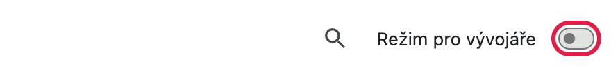
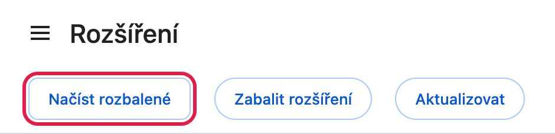
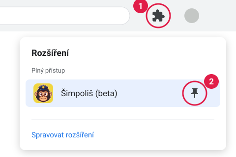

Šimpoliš (beta)
návod
Stáhnout Šimpoliše 0.5.0 (ZIP)
Instalace je jednorázový úkol na pár minut, postup je níže.
Šimpoliš je šimpanz policajt 🐵👮. Hlídá za tebe školní akce a přihlašování na ně. Technicky je to rozšíření pro Chrome.
- Hlídá akce, které si vybereš. Jakmile je možné se přihlásit, dá ti vědět.
- Umí tě přihlásit sám, když u akce zaškrtneš „přihlásit mě automaticky“.
- Upozorní tě na nové akce. Ty, které tě nezajímají, schováš jedním kliknutím.
- Osobní data nesdílí. Heslo, přihlášení do SIS ani tvoje akce nikdy neopustí tvůj prohlížeč. Sdílí jen veřejný seznam akcí, viz část Co Šimpoliš sdílí.
Instalace (jednorázový úkol na pár minut)
Šimpoliš není v obchodě Chrome Web Store, instaluje se ze ZIPu. Na Macu i ve Windows je postup stejný, liší se jen rozbalení.
Krok 1: stáhni ZIP. Tlačítko Stáhnout Šimpoliše je nahoře na stránce s návodem. Soubor se uloží do složky Stažené soubory.
Krok 2: rozbal ho. Na Macu na stažený soubor dvakrát klikni. Ve Windows na něj klikni pravým tlačítkem a zvol Extrahovat vše, pak Extrahovat.
Krok 3: přesuň složku Simpolis do Dokumentů. Najdeš ji v rozbaleném ZIPu. V Dokumentech zůstane natrvalo, protože Chrome si Šimpoliše načítá právě odtud. Pak ji už nepřesouvej, nepřejmenovávej ani nemaž.
Krok 4: otevři v Chromu stránku Rozšíření. Klikni na tři tečky ⋮ vpravo nahoře, pak Rozšíření, pak Spravovat rozšíření. Nebo napiš do adresního řádku chrome://extensions a stiskni Enter.
Krok 5: zapni Režim pro vývojáře. Přepínač je vpravo nahoře.

Krok 6: klikni na Načíst rozbalené a vyber složku Simpolis v Dokumentech.

Načteno: v seznamu rozšíření uvidíš kartu Šimpoliše se zapnutým modrým přepínačem.

Krok 7: připni si šimpanze, ať ho máš v liště po ruce.

Po instalaci se otevře stránka Nastavení s krátkým úvodem. Funguje i v Edge a Brave.
Aktualizace
- O nové verzi ti Šimpoliš řekne sám. V okně šimpanze se objeví modrý pruh a přijde notifikace.
- Postup: stáhni nový ZIP a rozbal ho jako při instalaci. Novou složku Simpolis přetáhni do Dokumentů a zvol Nahradit.
- Šimpoliš si novou verzi do minuty načte sám. Kdyby ne, klikni na stránce Rozšíření u Šimpoliše na kruhovou šipku.
- Hlídané akce zůstanou, když je složka pořád na stejném místě. Trezor se zamkne a odemkneš ho hlavním heslem.
- Stará verze se může vypnout. Když vyjde důležitá oprava nebo projekt skončí, stará verze přestane hlídat a v okně šimpanze uvidíš proč.
- Kterou verzi máš, zjistíš v Nastavení v části Diagnostika.
Notifikace
Povinné: povolit oznámení pro Chrome. Bez toho ti Šimpoliš nedá vědět o otevřeném přihlášení. Automatické přihlášení funguje i bez notifikací.
Mac
- Otevři Nastavení systému, pak Oznámení, pak Google Chrome.
- Zapni Povolit oznámení. Povinné.
- Nastav styl na Upozornění (v novějším macOS Trvalé). Doporučené: jinak notifikace za pár sekund zmizí.
Windows
- Otevři Nastavení, pak Systém, pak Oznámení.
- Zapni oznámení pro Google Chrome. Povinné.
- Vypni režim Nerušit, nebo do výjimek přidej Google Chrome. Doporučené.
Co musí platit, aby hlídal
- Chrome běží. Okno může být zavřené, aplikace ne.
- Počítač nespí. Když počítač uspíš, Šimpoliš spí s ním.
- Jsi přihlášený do SIS v tomhle Chromu, nebo máš odemčený trezor (viz níže).
Jak hlídat akci
- Klikni na šimpanze.
- U akce zvol Hlídat. Online akce mají „přihlásit mě automaticky“ zaškrtnuté předem, akce v budově ne. Obojí můžeš změnit.
- Hotovo. Hlídat můžeš libovolný počet akcí.
Akci, kterou nechceš, schováš tlačítkem Nezajímá mě / Už mě nezajímá. Když se spleteš, najdeš ji dole v sekci Nezajímá mě a vrátíš tlačítkem Vrátit.
Akce ze SIS, které nejsou ve veřejném harmonogramu, jsou ve sbalené sekci Další akce v SIS. Často jde o povinné semináře a praktické aplikace.
Pravidla automatického přihlášení
- Jen na akce, které sis vybral a u kterých je zaškrtnuté „přihlásit mě automaticky“.
- U akcí mimo Skill-Port a Hosté VŠEM se nejdřív zeptá. Až akci najde v SIS, ukáže přesný název a ty potvrdíš, že je to ona.
- Jeden pokus na akci. Když se něco pokazí, dá vědět a víc nezkouší. Tlačítko Zkusit znovu pokus povolí znovu.
- Nikdy tě neodhlásí.
Barvy
| Barva | Co znamená |
|---|---|
| 🔴 červená | Bez tebe Šimpoliš nefunguje. Třeba se máš přihlásit do SIS. |
| 🔵 modrá | Je vyžadována tvá akce. Třeba se otevřelo přihlášení, nebo máš potvrdit akci. |
| 🟢 zelená | Všechno je v pořádku, nebo je hotovo. |
Ikona šimpanze v liště se barví stejně: žlutá v klidu, modrá při příležitosti, červená, když je potřeba tvůj krok.
Trezor (nepovinný)
SIS automaticky odhlašuje a Šimpoliš tě pak upozorní, že se máš přihlásit. Díky trezoru se Šimpoliš zvládne přihlásit do SISu automaticky, a tím i na hlídanou akci.
Pracuješ se dvěma hesly:
- Heslo do SIS uložíš do trezoru jednou a pak už ho nezadáváš.
- Hlavní heslo trezoru je jiné heslo, které si vymyslíš (aspoň 8 znaků). Trezor jím odemykáš při založení a po každém restartu Chromu. Nepoužívej ho nikde jinde.
Další pravidla:
- Založení: v Nastavení vyplň jméno a heslo do SIS a pak dvakrát nové hlavní heslo trezoru.
- Po restartu Chromu je trezor zamčený. Když ho Šimpoliš potřebuje, ukáže nahoře pole na hlavní heslo.
- Když přihlášení z trezoru selže, víckrát to nezkouší a automatické přihlašování vypne. Přihlas se ručně, pak trezor zamkni a znovu odemkni.
- Heslo do SIS je zašifrované a odchází jen přes HTTPS na přihlašovací stránku školy.
- Smazání: v Nastavení v části Trezor klikni na Smazat trezor a potvrď Ano, smazat.
- Hlavní heslo trezoru nejde obnovit. Když ho zapomeneš, trezor smaž a založ znovu. Do SIS se tím nic nemění.
- Změnil jsi heslo do SIS? Trezor smaž a založ znovu.
Co Šimpoliš sdílí
Šimpoliši si mezi sebou předávají seznam akcí. Díky tomu nemusí každý stahovat SIS a web školy zvlášť, což šetří školní server i tvůj počítač.
- Co odchází: názvy, popisy a termíny akcí, kdy se na ně dá přihlásit a jakou mají kapacitu. Stejné údaje vidí v SIS každý student.
- Co nikdy neodchází: tvoje jméno, heslo, studijní číslo, trezor, akce, na které jsi přihlášený, ani akce, které hlídáš nebo které tě nezajímají.
- Kam: do skriptu Google Apps Script na účtu autora Šimpoliše. Ten seznam uloží na Google Disk autora a zveřejní ho jako veřejný katalog akcí. Seznam od ostatních si Šimpoliš stahuje ze stejného skriptu.
- Bez identifikace: Šimpoliš k seznamu nepřikládá tvůj Google účet ani přihlášení do SIS. Google jako provozovatel skriptu vidí jen tvou IP adresu, stejně jako u každé webové stránky.
- Kontrola nové verze: jednou za 6 hodin si Šimpoliš stáhne z webu návodu malý soubor s číslem nejnovější verze. Nic přitom neodesílá.
- Žádná statistika. Šimpoliš nesleduje, jak ho používáš.
Jak často se vše kontroluje
Jen tak často, jak je potřeba:
- Když nehlídáš žádnou akci: sleduje novinky na webu školy každou hodinu. Když má čerstvý seznam akcí od jiného Šimpoliše, do SIS se vůbec neptá.
- Akce je za více než 14 dní: hlídá jednou za 10 minut.
- Akce se blíží: hlídá přihlášení každou minutu, v noci (21 až 6 h) jednou za 5 minut.
- Je uvedený přesný čas otevření přihlašování: Šimpoliš zkontroluje SIS v daný čas.